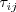
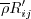
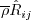
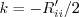
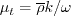
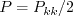
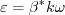
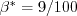
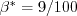

Public Access (formerly Langley Research Center)Turbulence Modeling Resource |
Stress-omega Full Reynolds Stress Model
This web page gives detailed information
on the equations for Wilcox's full second-moment Reynolds stress model, which
use an omega equation for the length scale equation.
Full second-moment Reynolds stress models are very different from simpler one and two-equation
linear/nonlinear models, in that the latter use a constitutive relation giving
the Reynolds stresses 
in terms of other tensors via some assumed relation (such as Boussinesq's hypothesis).
On the other hand, full second-moment Reynolds stress models compute each of the 6 Reynolds stresses
directly (the Reynolds stress tensor is symmetric so there are 6 independent
terms). Each Reynolds stress has its own transport equation.
There is also a seventh transport equation for the lengthscale-determining variable.
Unless otherwise stated, for compressible flow with heat transfer this model is implemented as described on the page
Implementing Turbulence Models into the Compressible RANS Equations, with perfect gas
assumed and Pr = 0.72, Prt = 0.90, and Sutherland's law for dynamic viscosity.
Return to: Turbulence Modeling Resource Home Page Wilcox Stress-omega Full Reynolds Stress Model
(WilcoxRSM-w2006)
This model's reference is:
Written in conservation form, the six Reynolds stress equations are solved in terms of the
Reynolds stresses

(notation different from the original reference), where
corresponds to
Note that this
definition is the negative of the

used in the
SSG/LRR-RSM-w2012 model.
The six Reynolds stress equations and one length scale equation are given by:
The production term is:
with 
and .
The pressure-strain correlation is modeled (without wall-correction terms) via:
or equivalently:
with
and  and
.
The coefficients (listed below) are from the LRR-QI model (J. Fluid Mech (1975), vol 68, part 3, pp. 537-566).
The closure coefficients are:
and
There are no specific farfield boundary conditions recommended for this model, and there are various wall
boundary conditions for
. See
the Wilcox k-omega page for more details.
Also, the approximate wall boundary condition for
from
Menter (AIAA Journal, Vol. 32, No. 8, August 1994, pp. 1598-1605,
https://doi.org/10.2514/3.12149) is sometimes used (see
SSG/LRR-RSM-w2012 model).
For the Reynolds stresses at solid walls:
Boundary conditions for RSM are important to handle correctly at symmetry boundaries:
Other Reynolds stress components should receive the usual symmetric treatment (i.e., zero gradient).
Note that the Reynolds stresses should adhere to the following realizability conditions (see, e.g.,
J. Fluid Mech. (1994), vol. 278, pp. 351-362,
https://doi.org/10.1017/S0022112094003745):
Regarding additional modeled terms appearing in the Favre-averaged equations, nothing specific
is recommended beyond what is described on the page:
Implementing Turbulence Models into the Compressible RANS Equations.
Return to: Turbulence Modeling Resource Home Page
Recent significant updates:
 as described on the page
Implementing Turbulence Models into the Compressible RANS Equations).
In other words, using the notation of this website:
as described on the page
Implementing Turbulence Models into the Compressible RANS Equations).
In other words, using the notation of this website:
 


03/24/2016 - mention realizability of Reynolds stresses
06/30/2015 - mention Pr, Pr_t, and Sutherland's law
11/20/2014 - added statement about BC treatment at symmetry planes
09/02/2014 - corrected typo in chi_omega equation
04/07/2014 - split SSG/LRR model to separate page
08/29/2013 - included equivalent pressure-strain form in WilcoxRSM-w2006
08/23/2013 - added "RSM" in naming convention for SSG/LRR version
08/22/2013 - added definitions of strain and vorticity tensors for Wilcox
07/22/2013 - corrected sign of production term in omega eqn of SSG/LRR-RSM-w2012
Page Curators: Christopher Rumsey,
Ethan Vogel,
Clark Pederson
Last Updated: 11/08/2021